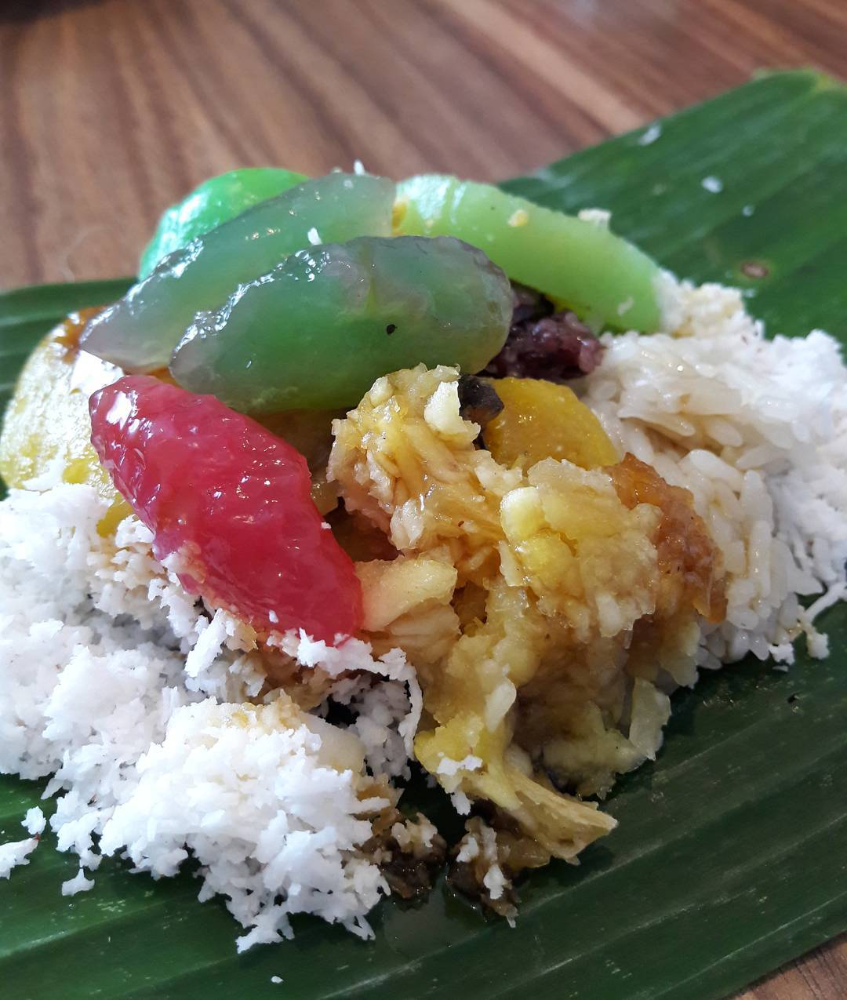
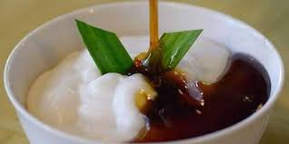
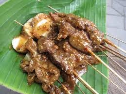
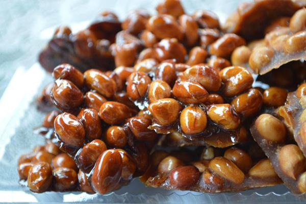

Menu Pilihan
-
 Lenjongan adalah nama bagi segerombolan jajanan pasar yang mayoritas terbuat dari singkong
-
 Bubur sumsum adalah sejenis makanan berupa bubur berwarna putih yang terbuat dari tepung beras dan dimakan dengan kuah manis (air gula merah).
-
 Sate kere, adalah sebutan untuk salah satu kuliner khas Solo yang terbuat dari tempe gambus yaitu tempe yang dibuat dari ampas tahu, dilengkapi dengan bumbu kacang seperti sate biasanya
-
 Ampyang adalah makanan tradhisional khas Jawa yang terbuat dari kacang tanah dan diberi gula jawa. Rasa ampyang itu manis dan gurih.